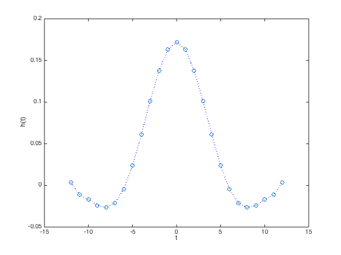
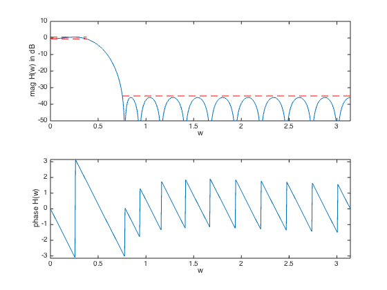

% "Filter design" lecture notes (EE364) by S. Boyd % (figures are generated) % % Designs a linear phase FIR lowpass filter such that it: % - minimizes the filter order % - has a constraint on the maximum passband ripple % - has a constraint on the maximum stopband attenuation % % This is a quasiconvex problem and can be solved using a bisection. % % minimize filter order n % s.t. 1/delta <= H(w) <= delta for w in the passband % |H(w)| <= atten_level for w in the stopband % % where H is the frequency response function and variable is % the filter impulse response h (and its order/length). % Data is delta (max passband ripple) and atten_level (max stopband % attenuation level). % % Written for CVX by Almir Mutapcic 02/02/06 %******************************************************************** % user's filter specifications %******************************************************************** % filter order that is used to start the bisection (has to be feasible) max_order = 20; wpass = 0.12*pi; % passband cutoff freq (in radians) wstop = 0.24*pi; % stopband start freq (in radians) delta = 0.5; % max (+/-) passband ripple in dB atten = -35; % stopband attenuation level in dB %******************************************************************** % create optimization parameters %******************************************************************** m = 30*max_order; % freq samples (rule-of-thumb) w = linspace(0,pi,m); %********************************************************************* % use bisection algorithm to solve the problem %********************************************************************* n_bot = 1; n_top = max_order; n = Inf; disp('Rememeber that we are only considering filters with linear phase, i.e.,') disp('filters that are symmetric around their midpoint and have order 2*n+1.') disp(' ') while( n_top - n_bot > 1) % try to find a feasible design for given specs n_cur = ceil( (n_top + n_bot)/2 ); % create optimization matrices (this is cosine matrix) A = [ones(m,1) 2*cos(kron(w',[1:n_cur]))]; % passband 0 <= w <= w_pass ind = find((0 <= w) & (w <= wpass)); % passband Ap = A(ind,:); % transition band is not constrained (w_pass <= w <= w_stop) % stopband (w_stop <= w) ind = find((wstop <= w) & (w <= pi)); % stopband As = A(ind,:); ptop = 10^(delta/20); % This is the feasibility problem: % cvx_begin % variable h_cur(n_cur+1,1); % 10^(-delta/20) <= Ap * h_cur <= 10^(+delta/20); % abs( As * h_cur ) <= +10^(+atten/20); % cvx_end % Unfortunately, the solvers often struggle with this formulation. For % this model, there is a logical optimization problem: minimize the % stopband attenuation. If the minimum attenuation is below the target, % then we know the original problem is feasible. cvx_begin quiet variable h_cur(n_cur+1,1); minimize( max( abs( As * h_cur ) ) ); 10^(-delta/20) <= Ap * h_cur <= 10^(+delta/20); cvx_end % bisection if isnan( cvx_optval ), fprintf( 1, 'Solver failed for n = %d taps, assuming infeasible\n', n_cur ); n_bot = n_cur; elseif cvx_optval <= 10^(atten/20), fprintf(1,'Problem is feasible for n = %d taps\n',n_cur); n_top = n_cur; if n > n_cur, n = n_cur; h = h_cur; end else fprintf(1,'Problem not feasible for n = %d taps\n',n_cur); n_bot = n_cur; end end h = [ h(end:-1:2); h ]; fprintf(1,'\nOptimum number of filter taps for given specs is 2n+1 = %d.\n', length(h)); %******************************************************************** % plots %******************************************************************** figure(1) % FIR impulse response plot([-n:n],h','o',[-n:n],h','b:') xlabel('t'), ylabel('h(t)') figure(2) % frequency response H = exp(-j*kron(w',[0:2*n]))*h; % magnitude subplot(2,1,1) plot(w,20*log10(abs(H)),... [wstop pi],[atten atten],'r--',... [0 wpass],[delta delta],'r--',... [0 wpass],[-delta -delta],'r--'); axis([0,pi,-50,10]) xlabel('w'), ylabel('mag H(w) in dB') % phase subplot(2,1,2) plot(w,angle(H)) axis([0,pi,-pi,pi]) xlabel('w'), ylabel('phase H(w)')
Rememeber that we are only considering filters with linear phase, i.e., filters that are symmetric around their midpoint and have order 2*n+1. Problem not feasible for n = 11 taps Problem is feasible for n = 16 taps Problem is feasible for n = 14 taps Problem is feasible for n = 13 taps Problem is feasible for n = 12 taps Optimum number of filter taps for given specs is 2n+1 = 25.
 